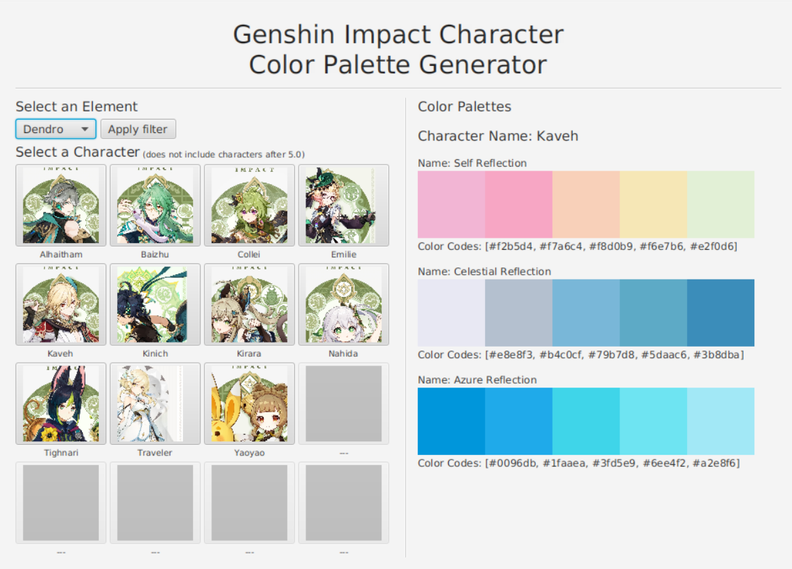
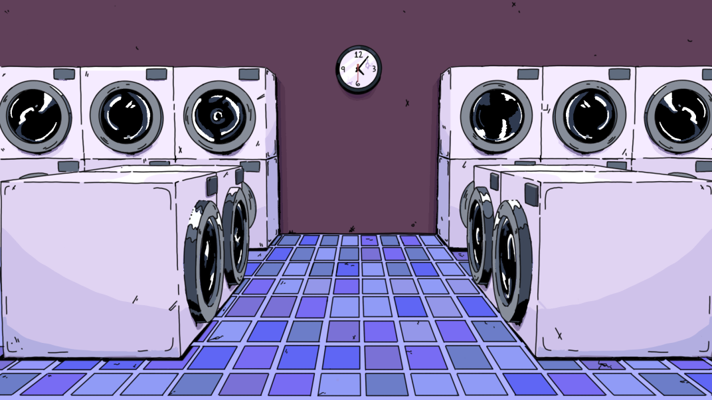

Atlanta, GA • (678) 373-6807 • karos1774@gmail.com
My name is Kaitlin Ros, and I am a current Computer Science major at the
University of Georgia. Whether I’m coding in Java or crafting 3D models in
Blender, I love transforming ideas into interactive, visually compelling results.
My main interests include software development, artificial intelligence, game
development, and audio development!
Education
University of Georgia
GPA: 3.95/4.00
B.S. Computer Science, Mathematics Minor, AI Certificate
Built a responsive portfolio website using HTML, CSS, and JavaScript to showcase projects, skills, and resume content.
Aesthetic Impact

Developed a JavaFX application in Linux/Unix that filters Genshin Impact characters by element and generates color palettes based on their in-game titles.
Integrated RESTful APIs and JSON data to retrieve character information and dynamically generate application content.
Used Git and GitHub for version control and project documentation.
Laundry Day

Assisted in the development of a 2D visual novel game using Ren’Py
Coordinated with team members to plan out storylines and character personality and background
Worked with members to create a script for the visual novel